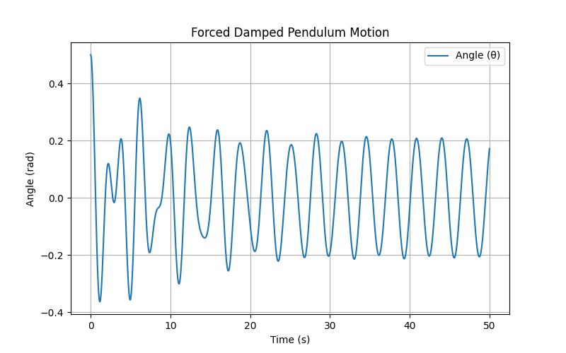

Investigating the Dynamics of a Forced Damped Pendulum
Motivation
The forced damped pendulum is a fascinating system where damping, restoring forces, and external periodic forcing interact to create diverse motion patterns. The system transitions from simple harmonic motion to resonance, chaos, and quasiperiodic behavior. These dynamics are essential in various real-world applications, including energy harvesting, structural engineering, and nonlinear oscillatory systems.
By systematically varying damping, driving amplitude, and driving frequency, we can observe different behaviors such as synchronized oscillations, resonance, and chaotic motion. Understanding these phenomena helps in designing better mechanical systems, reducing unwanted vibrations, and optimizing energy transfer in oscillatory systems.
1. Theoretical Foundation
The motion of a forced damped pendulum is governed by the differential equation:
where:
\(\theta\) is the angular displacement, \(b\) is the damping coefficient, \(g\) is gravitational acceleration, \(l\) is the length of the pendulum, \(A\) is the amplitude of the external forcing, \(\omega\) is the driving frequency.
Small-Angle Approximation
For small angles (\(\theta\approx\) \(\sin\) \(\theta\) ), the equation simplifies to:
This is a damped, driven harmonic oscillator with an analytical solution in the form:
where \(\theta_0\) is the initial amplitude, and \(\phi\) is a phase shift.
Resonance Conditions
Resonance occurs when the driving frequency matches the system's natural frequency:
At resonance, the system absorbs maximum energy, leading to large oscillations.
2. Analysis of Dynamics
Effect of Parameters on Motion
- Damping Coefficient (\(b\)):
Higher damping reduces oscillations and suppresses chaotic motion.
- Driving Amplitude (\(A\)):
Increased forcing can lead to resonance or chaotic behavior.
- Driving Frequency (\(\omega\)):
Tuning the frequency can shift the system from periodic to chaotic regimes.
Chaos and Transition to Irregular Motion
When forcing is strong and damping is moderate, the system can enter chaotic motion, characterized by sensitive dependence on initial conditions. This is analyzed using Poincaré sections and bifurcation diagrams.
3. Practical Applications
- Energy Harvesting: Used in devices that convert oscillatory motion into electricity.
- Suspension Bridges: Understanding resonance helps prevent structural failures (e.g., Tacoma Narrows Bridge collapse).
- Biomechanics: Models human gait and oscillatory movements.
- Electrical Circuits: Analogous to driven RLC circuits.
4. Computational Model & Simulations
We use Python to simulate the forced damped pendulum with the Runge-Kutta method for numerical integration.
Python Script (forced_damped_pendulum.py)
Python Code
```python import numpy as np import matplotlib.pyplot as plt from scipy.integrate import solve_ivp # Define system parameters g = 9.81 # Gravity (m/s^2) l = 1.0 # Length of pendulum (m) b = 0.2 # Damping coefficient A = 1.2 # Driving force amplitude omega = 2.0 # Driving frequency # Equations of motion def pendulum_eq(t, y): theta, omega_p = y dtheta_dt = omega_p domega_dt = -b * omega_p - (g/l) * np.sin(theta) + A * np.cos(omega * t) return [dtheta_dt, domega_dt] # Time span and initial conditions t_span = [0, 50] y0 = [0.5, 0] # Initial angle and velocity t_eval = np.linspace(0, 50, 1000) # Solve the system sol = solve_ivp(pendulum_eq, t_span, y0, t_eval=t_eval) # Plot results plt.figure(figsize=(8, 5)) plt.plot(sol.t, sol.y[0], label="Angle (θ)") plt.xlabel("Time (s)") plt.ylabel("Angle (rad)") plt.title("Forced Damped Pendulum Motion") plt.legend() plt.grid() plt.show() ---
5. Graphical Representations
1. Time Evolution of Motion
(Plot showing pendulum angle over time.)
2. Phase Portraits
\(\text{Plot }\) (\(\theta, \dot{\theta}\)) \(\text{ to visualize motion in phase space.}\)
3. Poincaré Sections
4. Bifurcation Diagrams
6. Discussion on Model Limitations & Extensions
Limitations
*The small-angle approximation fails for large oscillations*
*The model assumes a simple sinusoidal driving force.*
Possible Extensions
Nonlinear Damping: More realistic energy dissipation models Non-Periodic Forcing: Studying real-world irregular driving forces. Coupled Pendulums: Exploring synchronization and complex dynamics.
Conclusion
The forced damped pendulum provides insights into nonlinear dynamics, resonance, and chaos. By tuning parameters, we observe a transition from regular motion to chaos, revealing fundamental principles that apply to various fields of science and engineering.